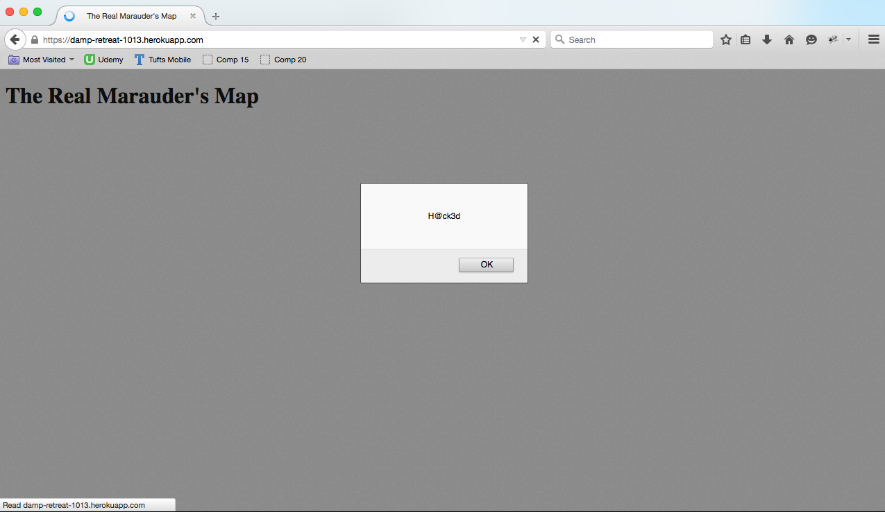
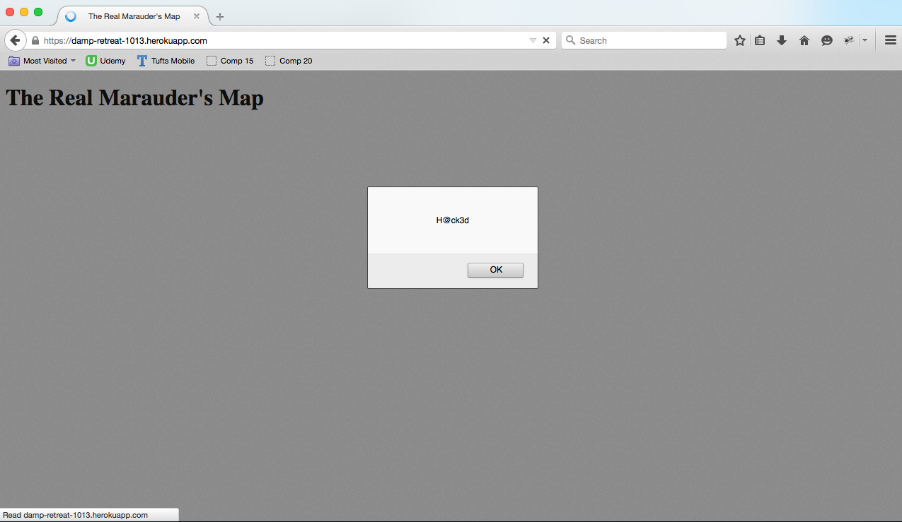
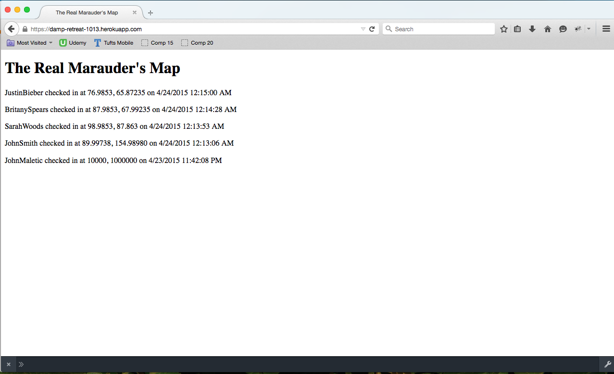
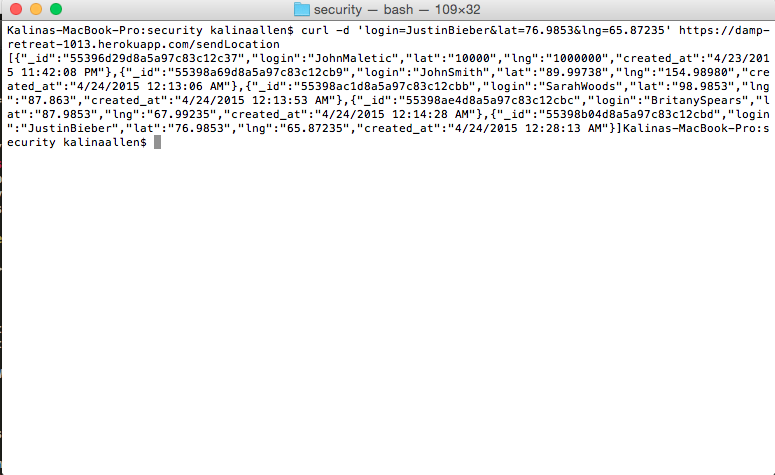

Maurader's Map Security Assessment
Prepared by Kalina Allen, 04/23/2015
Introduction
The purpose of this assessment was to provide an overview of any security and privacy issues associated with a web application and a web server written by Aditi Ashok . This document also details possible solutions to the issues identified. The web application that is being assessed is a "Maurader's Map", which
- 1. retrieves the user's current location and sends it to a database server
- 2. retrives and displays the locations of other people who have submitted their locations.
An important note about the scope of the assessment and the client's work: the client was required to comply with strict specifiications when she built both the web application and the web server. In particular, she was neither required nor instructed to implement authentication. This assessment focuses on both the ways that the API can be abused as well as insecurities in the given code.
Methodology
The first part of this assesment relied on "black-box" testing in order to simulate a hacker's environment. This testing was done using curl and a modern web browser. After most of the obvious security flaws had been identified, the code was reviewed for further inspection.
Abstract of Findings
These security and privacy concerns stem from the lack of authentication and the decision to trust user input. Resulting issues may include:
- 1. attacks that display malicious content to users via the client's web application and/or web server,
- 2. misuse of the personal information being stored in the database, and
- 3. corruption of the information in the database so that it no longer accurately represents personal login information.
Issues
1. Database Injection via Cross-Site Scripting
Path to attack: POST /sendLocation API
Severity of issue: HIGH. A malicious user could put almost anything in the database using the /sendLocation API because the data in the login field is not validated in any way.
By using curl, a person is able to inject data into the database as long as the following three fields are provided: "login", "lat", and "lng". All three fields can contain Javascript. Database injection was tested using the following commands:
curl -d 'login=<script>alert("H@ck3d");</script>&lat=3&lng=6'
curl -d 'login=<script>window.location.replace("http://stackoverflow.com");</script>&lat=3&lng=6'
The first command brought up an alert window, as shown below, and the second command successfully redirected the page.
 

Resolution: to fix this issue, the server needs to validate the user input before putting it in the database. The data from the "lat" and "lng" fields should be converted into floating point numbers and then checked to ensure that the values are numbers.
var lat = parseFloat(request.body.lat);
var lng = parseFloat(request.body.lng);
if( lat == undefined || lng == undefined || isNaN(lat) || isNaN(lng) ) {
response.send( {"error":"Whoops, something is wrong with your data!"} )
}
There are a few ways to ensure that a user cannot manipulate the "login" field.
- 1. Limit the number of characters that can be put into the "login" field, and reject the data if the user attempts to send more than specified.
- 2. Character escaping: convert all special characters into their HTML-code equvalents. This can be performed on data that is already in the database using
db.collection.update().
2. Displaying User Information Without Authentication
Path to attack: GET / or POST /sendLocation
Severity of issue: HIGH. Any user is able to access all the login data in the database. This is an enormous privacy issue because users may use their real names to login rather than an alias.
This issue was discovered by accessing the index page of the web server. Additionally, all the information in the database was returned when a POST request was sent to /sendLocation, given that a "login", "lat", and "lng" were provided.
 
Resolution: implement a server that will require authentication to view the index page or to send information via POST to the /sendLocation API. The client may wish to implement a separate authentication server that monitors communication between the client and the database server. Several tutorials regarding MongoDB security can be found here. THe client may also use the withCredentials property on XMLHttpRequest.
3. Allowing Users to Choose Login
Path to attack: POST /sendLocation or using the web application
Severity of issue: LOW. By interacting directly with the web server, or by using the web application, a user can change the data associated with any login name. This a relatively unsevere issue because it does not reveal a user's information. It does, however, corrupt the data in the the database.
Since the web application is associated with a particular login, anyone with the link to the web application can change the information in the database for that login. Furthermore, users can abuse the API by using curl to change the login information in the database via POST to the /sendLocation path. If a user does not have login information, he or she is able to retrieve all of that by viewing the index page (see issue #2).
Resolution: each login name should be associated with a password. This would ensure that every user has a unique login name, and that users are not able to change someone else's login data.
Conclusion
It is highly recommended that client implement some type of authentication to limit public interaction with the server and the database. This will make the web application and the web server more secure. It will also provide greater privacy to users. Altering the API is a relatively low-cost soluton. The more expensive solution, in terms of both time and capital, would be to use a different type of database. Increasingly, NoSQL databases are proving to be insecure. This presentation explains some of the issues with MongoDB; it may encourage the client to consider other options.